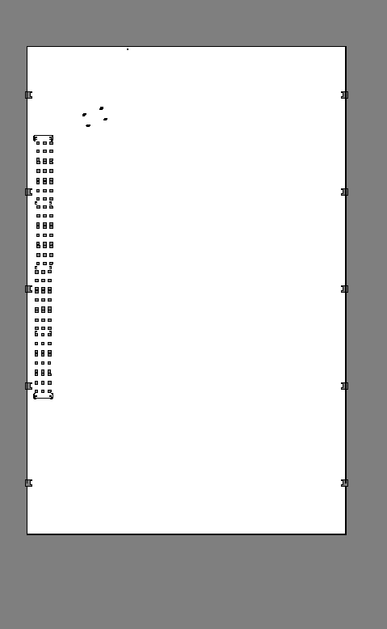

Mission Control
Command iw_hub with the assistant, or run a structured pick-and-place mission.
Run Mission
To pick_up
Lift raised
To destination
Lift lowered
Calls
/mission (iw_hub_pick_place_msgs/srv/RunMission). Requires
rosbridge_server running alongside Nav2 + mission_executor_node.
Waypoint names are fetched live from /list_waypoints — add new ones from
the Waypoints tab.
Telemetry
Lift status
—
Robot pose (map)
—
Mission log
Assistant
Claude
Tell the robot what to do, e.g. “go forward 5 m”, “turn left 90 degrees”,
“where are you?” or “take the dolly from goal_a to goal_b”.
Moves call
/drive_straight and /rotate on mission_executor_node
— straight moves bypass Nav2, so there is no obstacle avoidance. Requires
iw_hub_chat/server.py running (open this page from http://localhost:8000).
Site Map

Scroll to zoom. Press and drag on the map to place a waypoint and aim it; release to lock the heading.
New Waypoint
Saving calls
/add_waypoint, which writes straight into
pick_place_goals.yaml on the robot — the new point is usable immediately,
no restart needed.
Saved Waypoints 0
| Name | X (m) | Y (m) | Yaw (°) | Description |
|---|